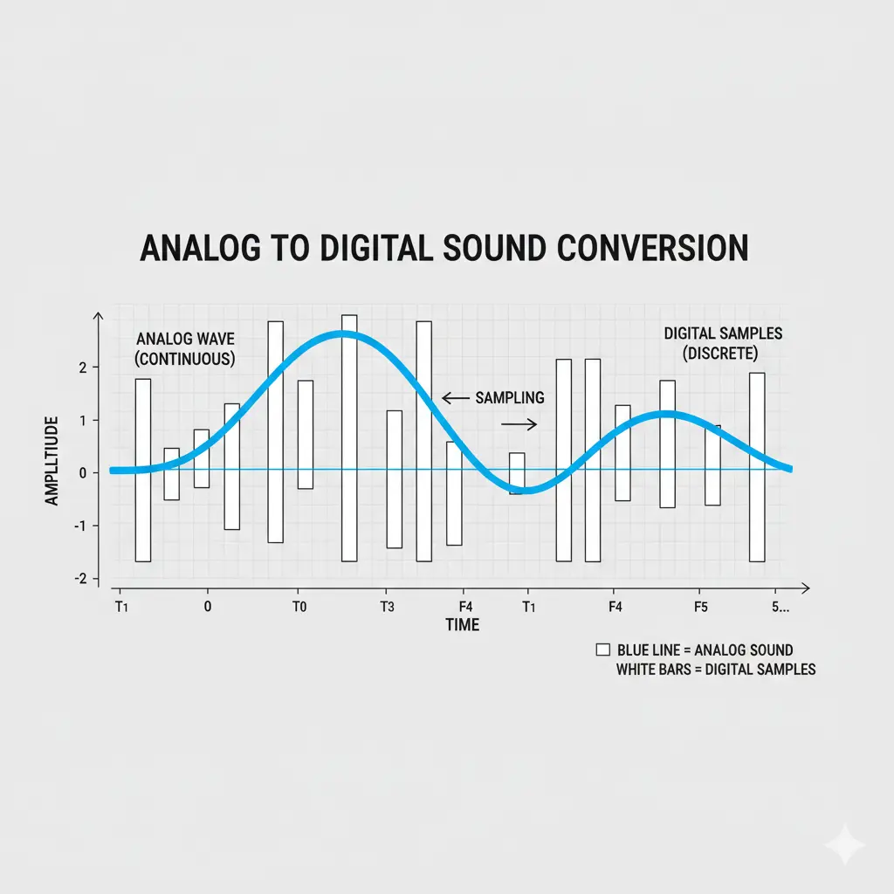
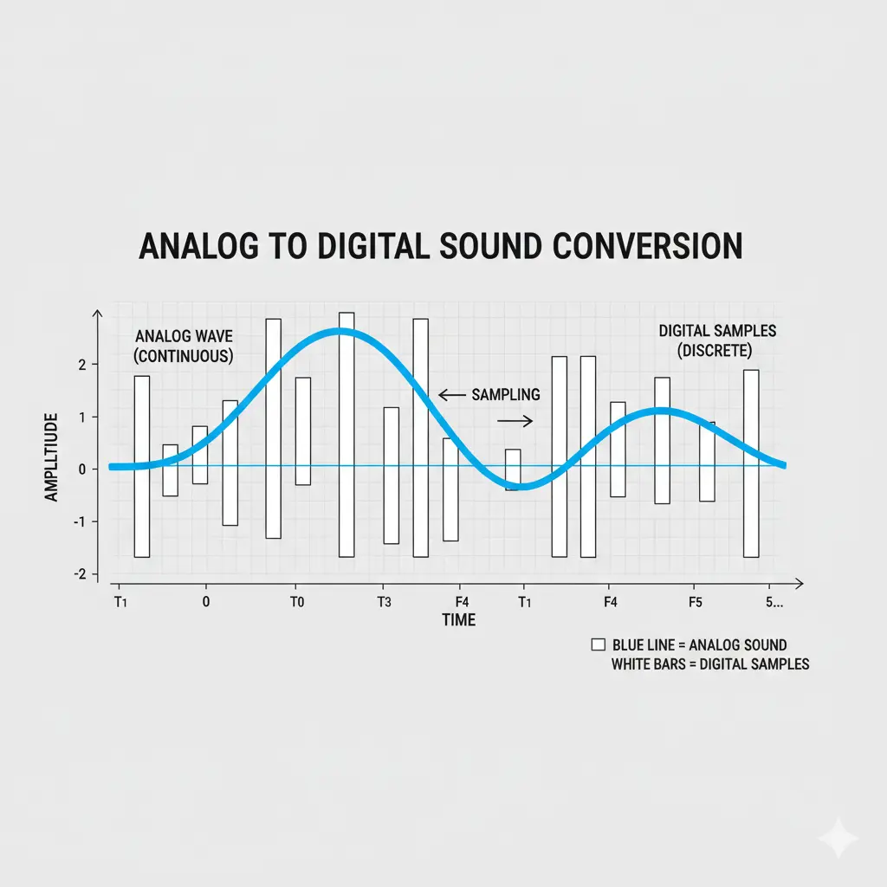
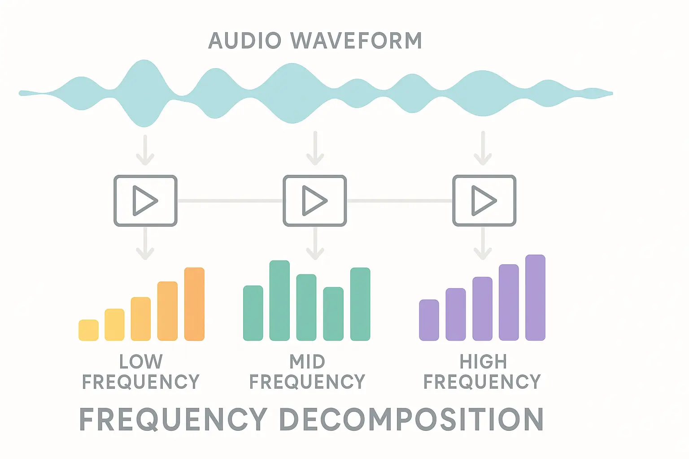
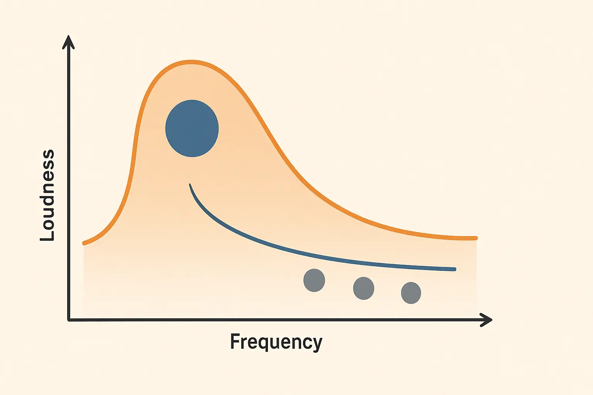
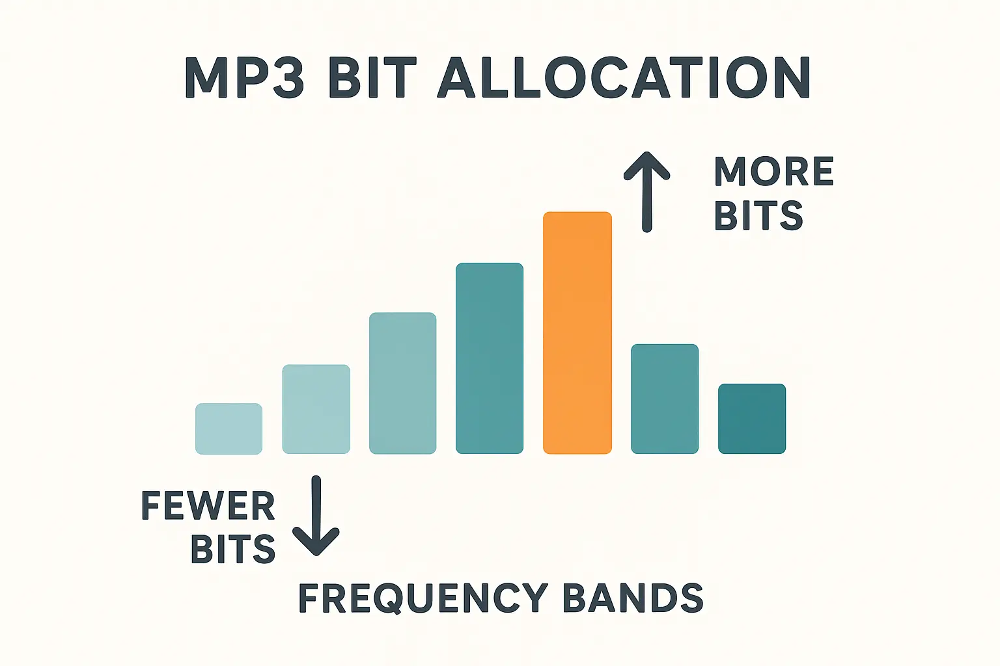

الخطوة الأولى: التقطيع والكمّية (Sampling & Quantization)
يبدأ المسار بتحويل الإشارة الصوتية التماثلية إلى عينات رقمية بتردد تقطيع مناسب (مثل 44.1 kHz)، ثم تمثيل كل عينة بعدد محدد من البتات. هذه المرحلة تحدد الدقة الأساسية وجودة التسجيل.
كما تناولنا ضغط الصور في JPEG، يقدم MP3 فكرة مشابهة للصوت: تصغير الحجم مع الحفاظ على جودة مقبولة للاستماع والبث والتخزين.
ستتعرف هنا على المبدأ السمعي الذي يعتمد عليه MP3 وخطوات العمل مع أمثلة عملية ومقاطع صوتية بمعدلات بت مختلفة للمقارنة.
ابدأ رحلة شرح MP3من العينة الرقمية إلى الملف المضغوط
سنعرض باختصار مراحل ضغط الصوت وفق معيار MP3 مع ربط المفاهيم بما تم شرحه في المقرر.
يبدأ المسار بتحويل الإشارة الصوتية التماثلية إلى عينات رقمية بتردد تقطيع مناسب (مثل 44.1 kHz)، ثم تمثيل كل عينة بعدد محدد من البتات. هذه المرحلة تحدد الدقة الأساسية وجودة التسجيل.
يتم تحليل الإشارة إلى نطاقات ترددية أدقّ باستخدام مرشحات/تحويلات طيفية. هذا يسمح بتحديد أين تقع الطاقة الصوتية فعلاً، تمهيداً لتوزيع البتات بكفاءة أعلى.
يعتمد MP3 على خصائص الإدراك السمعي مثل منحنيات تساوي الحساسية والتورية الترددية والزمنية. تُزال التفاصيل التي لا يدركها المستمع في وجود نغمات أقوى، مما يحقق ضغطاً كبيراً دون تأثير ملحوظ.
تُعطى البتات للأجزاء الأكثر أهمية سمعياً، ثم تُرمَّز البيانات بطرائق فعّالة مثل ترميز هوفمان مع تنظيم الإطارات. النتيجة ملف أصغر بكثير مع جودة مناسبة للاستخدام.
استخدم المشغلات للاستماع للفروقات.
فيديو سريع يختصر الفكرة بصرياً مع أمثلة.